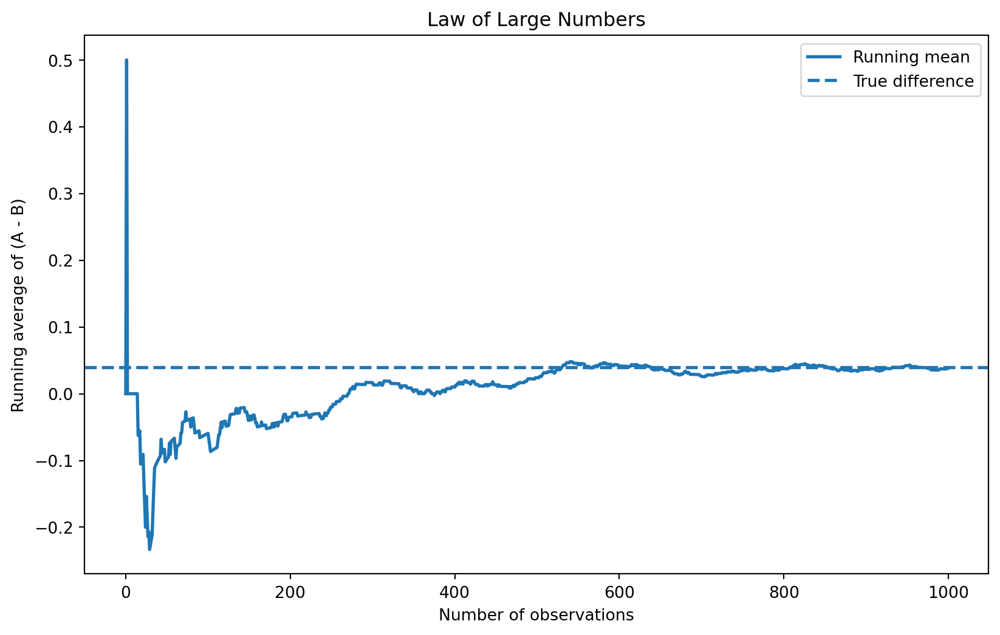
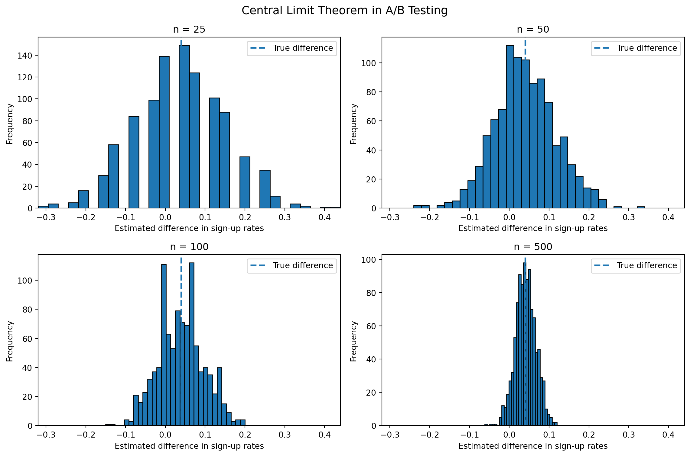

Simulating Key Ideas from Classical Frequentist Statistics
Author
Molly Tseng
Published
April 14, 2026
Introduction
When running a website, even small changes in word can make a big difference in how users behave. For example, if we want more people to sign up for a newsletter, the way we phrase the message might matter more than we expect.
In this example, we compare two different call-to-action (CTA) messages. CTA A says “Signs up for our newsletter here !!”, while CTA B says “Stay up to date by signing up !”. Both are trying to get users to do the same thing, but it’s not obvious which one will work better.
To figure this out, we run an A/B test. This means we randomly show visitors one of the two messages and track whether they sign up or not. By comparing the sign-up rates between the two groups, we can see which message is more effective.
The A/B Test as a Statistical Problem
To analyze this A/B test more formally, we can think of each visitor’s behavior as a simple yes-or-no outcome. Each visitor either signs up for the newsletter (which we record as 1) or does not sign up (which we record as 0). This type of data can be modeled using a Bernoulli distribution, where the probability of success (signing up) is denoted by \(\pi\).
Because the CTA that a visitor sees may influence their decision, we allow this probability to be different for each group. Let \(\pi_A\) represent the probability that a visitor signs up after seeing CTA A, and let \(\pi_B\) represent the probability of signing up after seeing CTA B.
The main quantity we care about is the difference between these two probabilities. In simple terms, we want to know how much better one CTA performs compared to the other. We define this difference as:
\[
\theta = \pi_A - \pi_B
\]
If this value is positive, it means CTA A performs better. If it is negative, CTA B performs better.
Since we do not know the true probabilities, we estimate them using our data. In each group, we calculate the average of the 0/1 outcomes. Because the data only contains 0s and 1s, this average is simply the proportion of users who signed up.
This means: \[
\bar{X}_A = \hat{\pi}_A
\]
\[
\bar{X}_B = \hat{\pi}_B
\]
We then estimate the difference between the two CTAs by subtracting these two averages:
\[
\hat{\theta} = \bar{X}_A - \bar{X}_B
\]
This estimated difference tells us how much better one CTA performs compared to the other based on the observed data.
Simulating Data
In a real A/B test, we would not know the true sign-up probabilities ahead of time. We would only observe whether each visitor signed up or not, and then use the data to estimate the difference between the two CTAs. For this exercise, however, we set the probabilities ourselves so that we know the true answer and can study how our estimator behaves.
Suppose the sign-up probability for CTA A is 0.22 and the sign-up probability for CTA B is 0.18. This means the true difference between the two groups is 0.04.
Using Python, I simulate 1,000 visitors for each group. Each visitor either signs up (recorded as 1) or does not sign up (recorded as 0). These simulated data will be used in the sections that follow.
Sample sign-up rate for CTA A: 0.216
Sample sign-up rate for CTA B: 0.178
Estimated difference (A - B): 0.038
group
signup
0
A
0
1
A
1
2
A
0
3
A
0
4
A
0
The Law of Large Numbers
The Law of Large Numbers tells us that as the sample size increases, the sample average gets closer to the true value. In this A/B testing setting, this is important because our estimate is based on averages.
To demonstrate this, I compute the difference between the outcomes in group A and group B for each observation. Then I calculate the running average of these differences as the sample size increases from 1 to 1,000.
At the beginning, when only a few observations are included, the average fluctuates a lot. However, as more observations are added, the average becomes more stable and gradually approaches the true difference of 0.04.
import numpy as npimport matplotlib.pyplot as plt# Compute element-wise differences between group A and group Bdiffs = A - B# Compute cumulative average (running mean)running_mean = np.cumsum(diffs) / np.arange(1, len(diffs) +1)# Plot the resultsplt.figure(figsize=(10, 6))plt.plot(running_mean, linewidth=2, label="Running mean")# Add a horizontal line for the true difference (0.04)plt.axhline(0.04, linestyle='--', linewidth=2, label="True difference")plt.xlabel("Number of observations")plt.ylabel("Running average of (A - B)")plt.title("Law of Large Numbers")# Show legendplt.legend()plt.show()

Bootstrap Standard Errors
So far, we have focused on estimating the difference in sign-up rates between the two CTAs. However, a single estimate does not tell us how precise it is. To understand how much uncertainty there is, we need to measure how much our estimate could vary across different samples.
One way to do this is through bootstrapping. The bootstrap is a resampling method that allows us to estimate the variability of a statistic without relying on a formula. The idea is simple: we repeatedly resample from our observed data (with replacement), compute the statistic each time, and then look at how much those results vary.
In this case, I repeatedly resample from the CTA A and CTA B data, compute the difference in average sign-up rates for each resample, and use the distribution of those values to estimate the standard error.
The bootstrap standard error is very close to the analytical standard error. This suggests that the bootstrap method is accurately capturing the variability of our estimator.
Using the bootstrap standard error, I construct a 95% confidence interval for the difference in sign-up rates. This interval gives a range of plausible values for the true difference.
If the interval includes 0, it means that we cannot rule out the possibility that there is no real difference between the two CTAs. If the entire interval is above 0, it suggests that CTA A performs better than CTA B. If it is below 0, CTA B performs better.
In this case, the confidence interval provides a useful way to understand not just the estimate itself, but also the uncertainty around it.
The Central Limit Theorem
The Central Limit Theorem (CLT) is one of the most important ideas in statistics. It tells us that even if the original data are not normally distributed, the sampling distribution of the sample mean becomes approximately normal when the sample size is large enough.
In this A/B testing setting, each individual outcome is binary: a visitor either signs up (1) or does not sign up (0). That means the underlying data are Bernoulli, not Normal. However, the CLT tells us that if we repeatedly compute the difference in sample means across many simulated experiments, the distribution of those estimates will become more bell-shaped as the sample size increases.
To illustrate this, I simulate the A/B test 1,000 times for several different sample sizes and plot the resulting distributions of the estimated difference in sign-up rates.
import numpy as npimport matplotlib.pyplot as plt# Set seed for reproducibilitynp.random.seed(42)# True probabilitiespi_A =0.22pi_B =0.18# Sample sizes to comparesample_sizes = [25, 50, 100, 500]# Store simulated estimatesclt_results = {}# Simulate 1,000 estimates for each sample sizefor n in sample_sizes: theta_hats = []for _ inrange(1000): A_sample = np.random.binomial(1, pi_A, n) B_sample = np.random.binomial(1, pi_B, n) theta_hat_sim = A_sample.mean() - B_sample.mean() theta_hats.append(theta_hat_sim) clt_results[n] = np.array(theta_hats)# Use common x-axis limits for easier comparisonall_values = np.concatenate(list(clt_results.values()))x_min = all_values.min()x_max = all_values.max()# Plot histograms in a 2x2 gridfig, axes = plt.subplots(2, 2, figsize=(12, 8))axes = axes.flatten()for i, n inenumerate(sample_sizes): axes[i].hist(clt_results[n], bins=30, edgecolor="black") axes[i].axvline(0.04, linestyle="--", linewidth=2, label="True difference") axes[i].set_title(f"n = {n}") axes[i].set_xlabel("Estimated difference in sign-up rates") axes[i].set_ylabel("Frequency") axes[i].set_xlim(x_min, x_max) axes[i].legend()plt.suptitle("Central Limit Theorem in A/B Testing", fontsize=14)plt.tight_layout()plt.show()

The four histograms show how the sampling distribution of the estimated difference changes as the sample size increases. When the sample size is small, the distribution looks rougher and less smooth because there is more sampling variability. The estimates are also spread out more widely.
As the sample size becomes larger, the histograms become smoother, more symmetric, and more bell-shaped. At the same time, the estimates become more concentrated around the true difference of 0.04.
This is exactly what the Central Limit Theorem predicts. Even though each individual observation is binary rather than Normally distributed, the distribution of the sample mean—and therefore the difference in sample means—becomes approximately Normal when the sample size is large enough.
Hypothesis Testing
Now that we have seen how the Central Limit Theorem works, we can use it to perform a formal hypothesis test. A hypothesis test helps us decide whether the difference we observe in our data is likely to be real or just due to random chance.
We start by setting up two hypotheses. The null hypothesis assumes that there is no difference between the two CTAs:
\[
H_0: \theta = 0
\]
The alternative hypothesis is that there is a difference:
\[
H_1: \theta \neq 0
\]
Our goal is to see whether the data provide enough evidence to reject the null hypothesis.
To do this, we standardize our estimate by dividing it by its standard error. This gives us a test statistic:
\[
z = \frac{\hat{\theta} - 0}{SE(\hat{\theta})}
\]
This step is important because it tells us how large our estimate is relative to the amount of uncertainty in the data.
By the Central Limit Theorem, the estimated difference is approximately normally distributed when the sample size is large. Under the null hypothesis, its mean is 0. When we divide by its standard deviation, the result follows a standard Normal distribution.
This allows us to compute a p-value, which tells us how likely it is to observe a difference as large as the one we found if the null hypothesis were true.
This procedure is often referred to as a t-test. However, in this setting the data are not Normally distributed, so there is no exact t-distribution result. Instead, we rely on the Central Limit Theorem, which makes the test closer to a z-test. In practice, for large samples, the difference between the two is very small.
The computed test statistic is approximately 2.14, which means the estimated difference is about 2.14 standard errors away from zero.
The corresponding p-value is approximately 0.032. This means that if there were actually no difference between the two CTAs, the probability of observing a difference this large (or larger) would be about 3.2%.
Since this p-value is smaller than the 0.05 significance level, we reject the null hypothesis. This suggests that there is statistically significant evidence that the two CTAs have different sign-up rates.
In this case, the positive estimated difference indicates that CTA A performs better than CTA B.
The T-Test as a Regression
It turns out that the hypothesis test we performed earlier is mathematically equivalent to a simple linear regression. This is useful because it means we can use regression tools to analyze A/B tests, and it also makes it easier to extend the analysis to more complex situations.
To set this up, we combine the data from both groups into a single dataset. For each observation, we define two variables. The first is the outcome, which is 1 if the user signed up and 0 otherwise. The second is an indicator variable that equals 1 if the user saw CTA A and 0 if the user saw CTA B.
We then fit the following regression model:
\[
Y_i = \beta_0 + \beta_1 D_i + \varepsilon_i
\]
In this model, β0 represents the average outcome when D = 0, which corresponds to group B. Therefore, β0 estimates the sign-up rate for CTA B.
When \(D_i = 1\), the expected value becomes:
\[
E[Y_i \mid D_i = 1] = \beta_0 + \beta_1
\]
which corresponds to group A. Therefore, \(\beta_0 + \beta_1\) estimates the sign-up rate for CTA A.
This means that β1 represents the difference between the two groups:
which is exactly the same as the difference in sample means that we computed earlier.
import statsmodels.api as sm# Create indicator variable: 1 = A, 0 = Bdf["D"] = (df["group"] =="A").astype(int)# Outcome variableY = df["signup"]# Add constant (intercept)X = sm.add_constant(df["D"])# Fit regressionmodel = sm.OLS(Y, X).fit()# Show resultsmodel.summary()
OLS Regression Results
Dep. Variable:
signup
R-squared:
0.002
Model:
OLS
Adj. R-squared:
0.002
Method:
Least Squares
F-statistic:
4.570
Date:
Tue, 14 Apr 2026
Prob (F-statistic):
0.0327
Time:
22:47:01
Log-Likelihood:
-991.64
No. Observations:
2000
AIC:
1987.
Df Residuals:
1998
BIC:
1998.
Df Model:
1
Covariance Type:
nonrobust
coef
std err
t
P>|t|
[0.025
0.975]
const
0.1780
0.013
14.161
0.000
0.153
0.203
D
0.0380
0.018
2.138
0.033
0.003
0.073
Omnibus:
434.378
Durbin-Watson:
1.932
Prob(Omnibus):
0.000
Jarque-Bera (JB):
777.046
Skew:
1.518
Prob(JB):
1.85e-169
Kurtosis:
3.320
Cond. No.
2.62
Notes: [1] Standard Errors assume that the covariance matrix of the errors is correctly specified.
The regression results confirm the findings from the previous analysis. The coefficient on the indicator variable (D) is approximately 0.038, which represents the difference in sign-up rates between CTA A and CTA B.
This value is very close to the estimated difference we computed earlier using the difference in sample means, confirming that the two approaches produce the same result.
The standard error of this estimate is about 0.018, and the corresponding t-statistic is approximately 2.14. The p-value is around 0.033, which is below the 0.05 significance level.
Overall, this demonstrates that the regression approach produces the same inference as the two-sample hypothesis test, while also providing a flexible framework that can be extended to more complex settings.
The Problem with Peeking
In practice, A/B tests are often monitored before all data are collected. Suppose your boss is impatient and decides to check the results repeatedly during the experiment. Instead of waiting until all 1,000 observations per group are collected, she looks at the results after every 100 observations and stops the experiment as soon as a statistically significant result appears.
At first glance, this might seem reasonable. However, this approach creates a serious problem in classical frequentist statistics. A single hypothesis test at the 5% significance level has a 5% chance of producing a false positive when the null hypothesis is true. But if we repeatedly test the data as it accumulates, each additional test increases the chance of incorrectly rejecting the null hypothesis.
In other words, peeking at the data inflates the overall false positive rate. Instead of having a 5% chance of making a mistake, the probability of at least one false rejection across multiple tests becomes much larger.
To demonstrate this, I simulate a scenario where the null hypothesis is actually true, meaning there is no difference between the two CTAs.
import numpy as npfrom scipy import statsnp.random.seed(42)# True probabilities under null (no difference)pi_A =0.20pi_B =0.20n_total =1000step =100n_experiments =10000false_positive_count =0for _ inrange(n_experiments):# Simulate full experiment A = np.random.binomial(1, pi_A, n_total) B = np.random.binomial(1, pi_B, n_total) reject =False# Peek every 100 observationsfor n inrange(step, n_total +1, step): A_sub = A[:n] B_sub = B[:n]# Estimate difference theta_hat = A_sub.mean() - B_sub.mean()# Standard error se = np.sqrt( (A_sub.mean() * (1- A_sub.mean()) / n) + (B_sub.mean() * (1- B_sub.mean()) / n) )# z-stat z = theta_hat / se if se >0else0# p-value p_value =2* (1- stats.norm.cdf(abs(z)))if p_value <0.05: reject =Truebreakif reject: false_positive_count +=1false_positive_rate = false_positive_count / n_experimentsfalse_positive_rate
0.1864
The simulation shows that the false positive rate under peeking is about 0.186, which is much higher than the expected 0.05.
This means that even when there is no real difference, about 18.6% of experiments would incorrectly find a significant result.
This happens because repeatedly checking the data increases the chance of a false positive. In practice, this shows that peeking can lead to misleading conclusions.
Overall, this example shows why we should be careful when analyzing A/B tests. If you found this helpful, feel free to check out my other posts where I explore more statistical ideas using simulations!